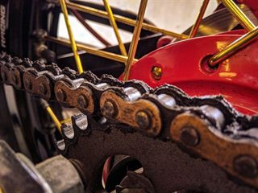

Een fiets die de hele winter buiten staat, roest sneller dan je denkt. Maak de ketting schoon voor de eerste vorst en smeer hem daarna opnieuw in.

Kijk ook je verlichting na voor je vertrekt. Wie in het donker zonder licht rijdt riskeert niet alleen een boete, maar is voor auto's nauwelijks zichtbaar.
Twijfel je aan je remmen? Laat ze nakijken in een fietsatelier in je buurt.